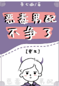

生前，晏暠一直不明白，明明是一母同胞的亲兄弟，为何父母总是偏爱弟弟,把所有好的都给他，无论自己做什么都得不到关注。
越是如此，晏暠便越是难受，越是不平，于是处处都和弟弟争。只要是弟弟想要做的事情，他也去做，并且做的更好。
明明他才是做的更好的那个人，却始终得不到周围人的认可，父母，老师，同学，朋友望着他的眼神都是嫌弃的，说他善妒，自私，喜欢抢别人东西。
一直到死，晏暠才明白，他抢的是主角受的东西。他是一本书中为了衬托主角受善良的恶毒男配，是为了让主角攻出现打脸，在主角受面前刷好感度的炮灰。
重生回来，晏暠一脚踹开主角，谁特么要和你争，老子转个身，你哭着也追不上我。
他不再争，不再嫉妒，只想安静的做自己。让自己的光芒，照在关注他的人身上。
===============================================================
“您是怎么走上机甲制造这条路的？”
“因为遇见了一个人。”晏暠。
=======
下一本开预收：《重生后嫁给了死对头》
跪求收藏。
白相星原本是个猛A，因为家族争斗，被亲叔叔设计注射了性别转换药剂，变成了软萌小O，还要送去给死对头当媳妇。
从小被当成继承人培养的白相星怎么可能容忍自己被人压，果断脱离家族，白手起家，依靠自己奋斗成联盟首富，最后却过劳死了。
死后重生，是件好事，唯一可惜的是，他晚重生了一天，还是变成了小O。
泥煤的！！
重生后不想再过劳死的白相星决定换个活法，看着送到面前的联姻协议，白相星果断的签了字。
“师镇这狗币不就是想羞辱我吗，羞辱就羞辱，面子值几个钱，等离婚捞一笔赡养费，老子少奋斗二十年。”白相星计划着。
“不离婚，我养你。”师镇道。
干年后，有人问已经是上将的师镇。
“请问上将夫人有什么优点吗？”
“会赚钱。”
果然是优点！
“那请问，上将夫人有什么缺点吗？”
“太能赚钱。”
我擦，是来炫富的吗？
上将下属都知道，上将有一个烦恼，那就是媳妇太能赚钱，一吵架就要离婚。
==============================================================
搜索关键字：主角：晏暠（yanhao），盛恒 ┃ 配角： ┃ 其它：身心1v1